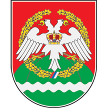

Gradska opština Savski Venac
Gradska opština

Opis grba
Grb opštine koristi se u tri nivoa, kao osnovni, srednji i veliki.
Osnovni grb opštine Savski venac je cvetni štit na kome je zeleni trobreg, u čijem je podnožju srebrna talasasta greda, a iznad nje preko svega zlatan hrastov venac u dnu vezan srpskom trobojkom, preko toga je postavljen srebrni dvoglavi orao zlatno oružan i istih takvih jezika i nogu, na čijem je grudima kruna kralja Petra I u prirodnim bojama.
Srednji grb je istovetan sa osnovnim grbom, ali je štit nadvijen zlatnom bademastom krunom sa tri zupca iznad štita.
Veliki grb je istovetan sa srednjim grbom, ali sadrži i dva držača u vidu srebrnih labudova, zlatnih kljunova i nokata i crnih nogu, krila podignutih za poletanje; svaki držač pridržava jarbol stega, prirodne boje i zla tom okovan, zlatnog vrha, i to desni držač istim takvim resama opervažen steg grada Beograda, a levi držač istim takvim resama opervažen steg opštine Savski venac. Na postamentu velikog grba crnim slovima ispisano je Savski venac. Zastava opštine Savski venac ima polje kvadratnog oblika i crvene boje u kome je iznad crvenog tla spuštena talasasta bela greda iznad koje se uzdiže zeleni trobreg, a u gornjem kantonu, uz jarbol, nalazi se zlatni hrastov venac uvezan srpskom trobojkom.
Opšte informacije
Grb opštine Savski venac usvojen je 1993. godine. Izradilo ga je srpsko heraldičko društvo „Beli orao”, a autor likovnog rešenja je Dragomir Acović.